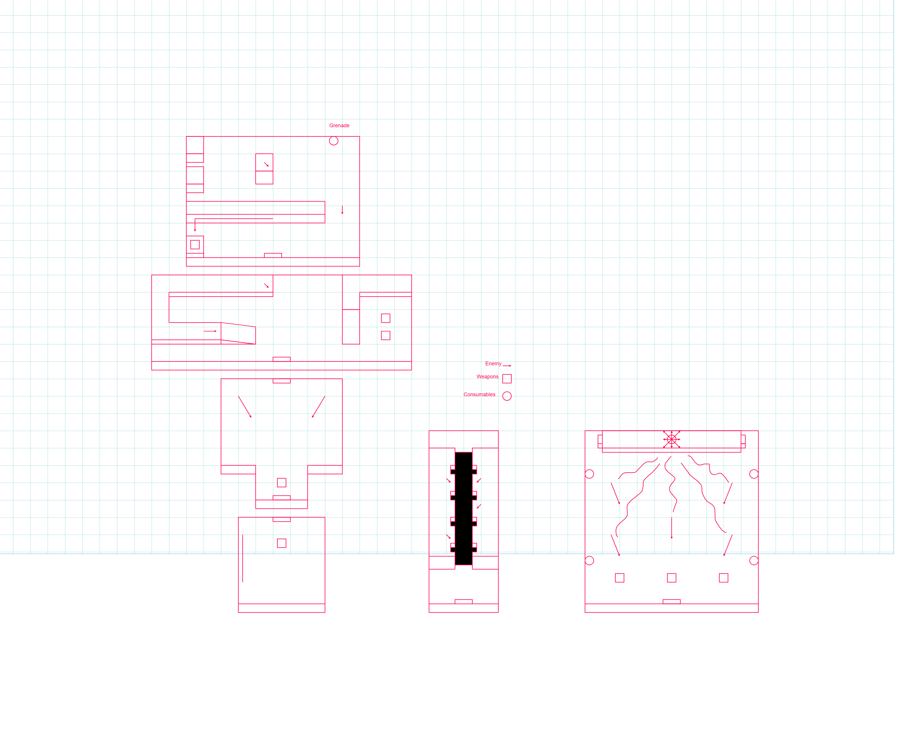

Design Process
Project Goal: Improve
This content becomes visible when expanded.
This content becomes visible when expanded.
This content becomes visible when expanded.
My most recent completed game, King Tut, was created the second time I entered Chillennium, with a 3D Technical Artist I knew, and an Unreal Engine dev. For this jam I focused entirely on design for the first half: level layouts, player / game mechanics, game feel, win condition, etc. Due the nature of our time crunch, I determined a level-based design would work best, as we could continue adding levels as we had time. This was certainly the most impressive & successful game I had a part in making, staying at the top of the "most played" until the end of the jam.


BOOM-erang is a 3D action shooter focused on the idea that the player would never be left without something to do. The game features physics-based gun handling mechanics, centered around the main feature of throwing the gun to reload it when it hits an enemy. This game is still unfinished, but I have begun reconstructing it in Godot 4.
This was my first solo game project, developed over the course of a semester in an alpha 3D Python game engine called Basilisk. Having just learned the Python scripting language for my CSCE degree, I decided to try making a game purely on my own. The actual design and scoping for this game were within what I believe I could have done, but with raycasts not being entirely supported in my chosen engine, and physics calls being too inaccurate to detect high-speed collisions, I was left unable to complete my game in time.
This was my first solo game project, developed over the course of a semester in an alpha 3D Python game engine called Basilisk. Having just learned the Python scripting language for my CSCE degree, I decided to try making a game purely on my own. The actual design and scoping for this game were within what I believe I could have done, but with raycasts not being entirely supported in my chosen engine, and physics calls being too inaccurate to detect high-speed collisions, I was left unable to complete my game in time.
Check out the debug room online Here
Design Process
Project Goal: Practice Actual Design Layout
Tools: Google Docs, Basilisk Engine / Godot 4, virtual-graph-paper.com
Process:
- Step 1: Theme breakdown (It all comes back)
- Step 2: Brainstorm
- Step 3: Pick Favorite, repeat 2 twice more
- Step 4: Draft GDD
- Step 5: Determine tools
- Step 6: Develop, update GDD as I go
The original Game Design Document that I created for this game, that I still follow, is readable below, as well as the original map layouts:
Pillars: Humorous Visuals, Simple Gameplay, Stress-inducing Stealth

Free Bozo is a 2D top-down stealth game centered around the escape efforts of an incarcerated clown. You play as Bozo, the clown locked up in this high security prison, and must escape while evading the watchful eyes of the security guards. If you're feeling risky, you might even be able to pick up some of your old gear...
This game was created in 3 days, leading up to the end of a semester long game jam for Texas A&M's game dev club. My brother and I made it together when I in the spur of the moment told him I wanted to try making a game. As I had no prior experience in anything game dev related, I collaborated with him on the design, and created the pixel art assets used inside the game.
Free Bozo is available to play online Here
Design Process
Project Goal: Introduce Myself to Game Dev
Tools: Piskelapp.com, Google Docs, Unity
Process: Coming from my product design experience with robotics, we started by defining what we wanted the user to experience when using our product, and what tools we were able to use to produce that experience. As we discussed, we determined that we wanted to make a stealth game, but we also wanted to make people laugh (as this was likely our only saving grace). I would later come to learn that these are referred to as game design pillars, which are the basis for the direction of your game. Thus, we came up with bozo the clown, escaping a high-security prison.
We did not have much of a detailed process at the time, but it naturally fell into:
- Step 1: Theme breakdown (Motion Commotion)
- Step 2: Brainstorm
- Step 3: Open Discussion
- Step 4: Tool determination
- Step 5: Document the design
- Step 6: Develop
Pillars: Humorous Visuals, Simple Gameplay, Stress-inducing Stealth